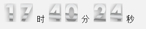

数学运算，比如：三角函数？勾股定理？一元二次方程？
问：求页面中两点之间的距离
问：求时钟指针转动时的坐标
Math内置对象
Math 对象属性
属性 | 描述 |
Math.E | 返回算术常量 e，即自然对数的底数（约等于2.718）。 |
Math.LN2 | 返回 2 的自然对数（约等于0.693）。 |
Math.LN10 | 返回 10 的自然对数（约等于2.302）。 |
Math.LOG2E | 返回以 2 为底的 e 的对数（约等于 1.414）。 |
Math.LOG10E | 返回以 10 为底的 e 的对数（约等于0.434）。 |
Math.PI | 返回圆周率（约等于3.14159）。 |
Math.SQRT1_2 | 返回返回 2 的平方根的倒数（约等于 0.707）。 |
SQRT1_2.SQRT2 | 返回 2 的平方根（约等于 1.414）。 |
Math 对象方法
方法 | 描述 |
abs(x) | 返回数的绝对值。 |
sin(x) | 返回数的正弦。 |
cos(x) | 返回数的余弦。 |
tan(x) | 返回角的正切。 |
ceil(x) | 对数进行上舍入。 |
floor(x) | 对数进行下舍入。 |
round(x) | 把数四舍五入为最接近的整数。 |
max(x,y) | 返回 x 和 y 中的最高值。 |
min(x,y) | 返回 x 和 y 中的最低值。 |
pow(x,y) | 返回 x 的 y 次幂。 |
sqrt(x) | 返回数的算术平方根。 |
random() | 返回 0 ~ 1 之间的随机小数，包含0不包含1 |
Math.random()生成一个从0-1（包含0不包含1）的随机小数
生成 min ~ max （min < max）的随机数公式：
Math.random()*(max - min) + min
抽奖程序
练习
编写一个函数，获得一个十六进制的随机颜色的字符串(例如：#20CD4F)
对象
对象的类型是Object。
JavaScript 中的所有事物都是对象：字符串、数值、数组、函数...
javaScript中万事万物皆对象
想要有对象怎么办？
创建对象：（创建两种方式:字面量和new运算符）
1.New一个对象出来；
var obj = new Object();
//找到对象了 >>> 第一个想到的就是属性；
//给对象添加一个属性；
obj.bianmei='哇真的变漂亮了' ;
obj.say=function(){
alert(this.bianmei);
}
obj.say();
obj的属性可以是一个函数，这个时候也叫方法；
obj函数内的指针this，指向obj对象本身；
删除对象的属性
delete obj.jian；
小练习：
创建一个对象，并在对象中定义一个方法， 让该方法弹出
1.自己的姓名；
2.自己的年龄；
3.自己的爱好；
4.一个小总结；
javaScript的内置对象：系统提供的对象
昨天学过的：String.fromCharCode();
javaScript内置对象简介
● javaScript内置对象------Object对象
● javaScript内置对象------Number对象
● javaScript内置对象------String对象
● javaScript内置对象------Math对象
● javaScript内置对象------Array对象
● javaScript内置对象------Date对象
=================================================================
javaScript内置对象(十个)
1. Object对象 是所有JavaScript对象的超类(基类)
2. Array对象 数组对象--定义数组属性和方法
3. Boolean对象 布尔对象--布尔值相关
4. Date对象 日期对象--日期时间相关
5. Error对象 错误对象--处理程序错误
6. Function对象 函数对象--定义函数属性和方法
7.Math对象 数学对象--各种数学运算工具(不是构造函数)
8.Number对象 数字对象--定义数字属性和方法
9.RegExp对象 正则表达式对象--定义文本匹配与筛选规则
10.String对象 字符串对象--定义字符串属性和方法
-----------------------------------------------------------------
Date内置对象
日期对象创建
时间戳是指格林威治时间1970年01月01日00时00分00秒(北京时间1970年01月01日08时00分00秒)起至现在的总毫秒数（时间戳）
var date = new Date();//当前时间的日期对象
var data = new Date(2012,6,10);//2012年7月10号的日期对象
get系列API
getFullYear() | 返回年 |
getMonth() | 返回月份0--11 |
getDate() | 返回某一天 |
getDay() | 返回星期0-6 |
getHours() | 返回小时 |
getMinutes() | 返回分钟 |
getSeconds() | 返回秒 |
getTime() | 返回1970年1月1日午夜到指定日期（字符串）的毫秒数 |
set系列API
setFullYear() | 设置年份 |
setMonth() | 设置月 |
setDate() | 设置天 |
setHours() | 设置小时 |
setMinutes() | 设置分钟 |
setSeconds() | 设置秒 |
setTime() | 使用毫秒的形式设置时间对象 |
★注意:
1、setDay( 这个真没有!!!!,星期是通过设定日期自动计算的 )
2、set系列API可以设置比当前范围更精细的时间
比如：setFullYear（2012，3，5） 设置日期为2018年4月5号
setHours（13，30，0） 设置时间为13:30:00
-----------------------------------------------------------------
1秒=1000毫秒
1分钟=60秒
1小时=60分=3600秒
1天=24小时=1440分=86400秒
实例： setFullYear(year，month，day)
year：
必需，表示年份的四位整数
month：
可选,介于 0 ~ 11 之间：如果不填，取系统当月
-1 为去年的最后一个月
12 为明年的第一个月
13 为明年的第二个月
date：
可选,表示月中某一天的数值。如果不填，取系统当日
用本地时间表示。介于 1 ~ 31 之间：
0 为上个月最后一天
-1 为上个月最后一天之前的天数
如果当月有31天：
32 为下个月的第一天
如果当月有30天：
32 为下一个月的第二天
例：现在时间：13:11:43
var date = new Date(2012, 2, 15, 13, 11, 43);
2012年3月15日 13:11:43
date.setFullYear(2013, 5);
2013年6月15日 13:11:43
date.setFullYear(2012, 20, 5);
2013年9月5日 13:11:43
将日期格式化成字符串
将指定格式字符串转化成日期
日期转为毫秒数
计算已经过了元旦多少天了？
计算离下一个节假日还有多少天？
简易日历
练习
1、秒杀活动倒计时
2、数码时钟
